V01 · Original refinada
O logo atual redesenhado com precisão, sem nenhuma mudança. É a régua das outras.


V01 a V24 já foram apresentadas. V25 a V36 são novas (etiqueta "nova"). Todas partem do visual da V01.
O logo atual redesenhado com precisão, sem nenhuma mudança. É a régua das outras.
Mesmo símbolo, com letras de cantos macios (Fredoka).


O nome em marrom-café; símbolo e til continuam laranja.


Um reflexo pequeno dentro das duas lentes.


O pingo do i e o til do ã em âmbar.

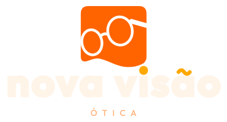


Peso um degrau abaixo e um fio mais de espaço.


A palavra ÓTICA discreta embaixo do nome, também na horizontal.


Faixa de laranja mais escuro seguindo a onda da base.
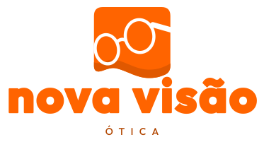

Uma segunda onda fina logo abaixo do ícone.
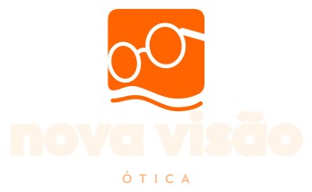
As lentes num laranja um pouco mais claro, como vidro.
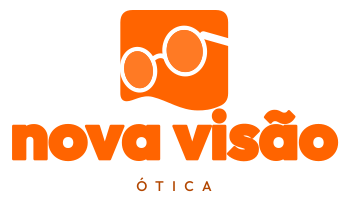
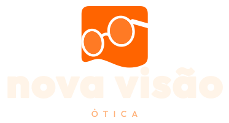
Só os cantos do quadrado ficam mais arredondados.
Letra arredondada com o nome em marrom-café.


Letra arredondada com pingo do i âmbar.


Reflexo nas lentes e nome em marrom-café.
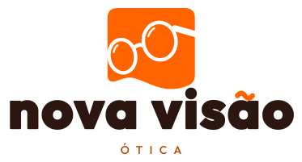


O aro das lentes mais fino: mais leve e delicado.
O aro mais grosso: mais presença em tamanho pequeno.
A armação gira um pouco mais, com mais movimento.
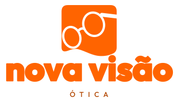
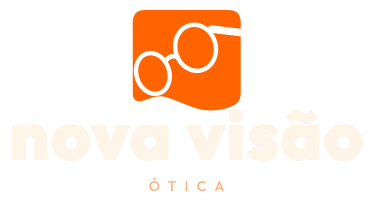
A onda da base com mais subida e descida.
Um laranja mais fechado e quente (#F2530C).


Um laranja mais claro e luminoso (#FF7A00).


Símbolo no laranja da marca e nome num laranja mais escuro.

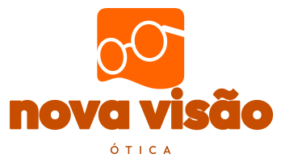


Símbolo e nome inteiros em marrom-café, para uso sem cor.


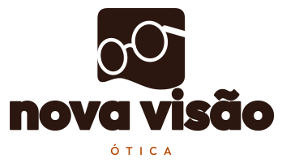


Só o til do ã refeito como uma onda, como a base do ícone.

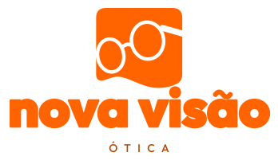



Nome em café e a faixa mais escura na onda.

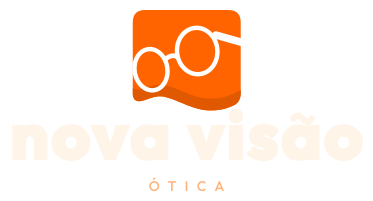

A mesma letra, com um fio mais de espaço entre elas. Lê melhor em tamanho grande.


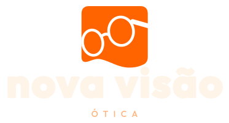


Um degrau a mais de peso: ainda mais compacta e forte.


As lentes ovais viram círculos perfeitos, sem mexer em mais nada.
A haste dos óculos ondula, repetindo a onda da base.
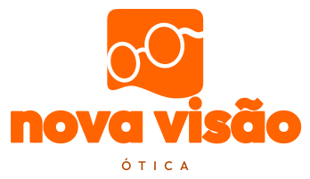
O quadrado vira contorno e a armação em traço: mais leve, bom para uso em uma cor.
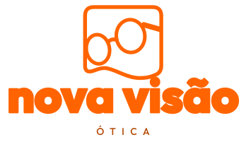
Uma sombra sólida deslocada atrás do ícone, sem desfoque.
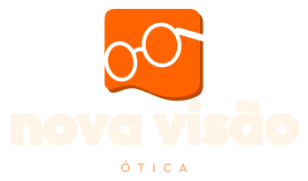
Reflexo nas lentes e faixa escura na onda.
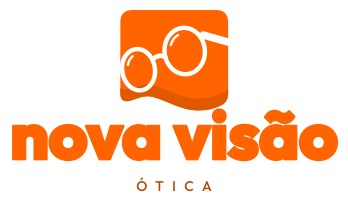
Lentes em tom claro com o reflexo por cima.
Nome em marrom-café com a palavra ÓTICA embaixo.


O laranja mais fechado com o reflexo nas lentes.
Apenas o til do ã em âmbar, o resto igual.
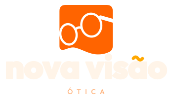


Letra arredondada com o reflexo nas lentes.